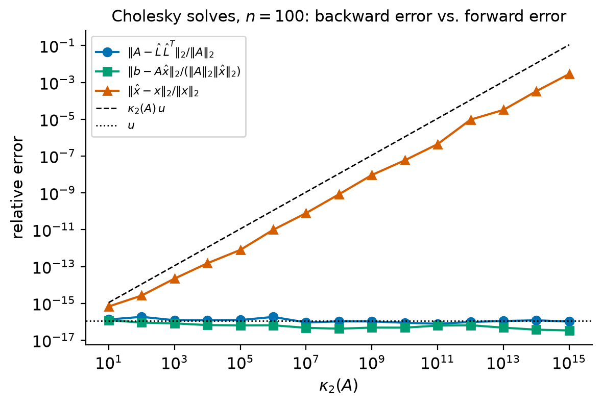
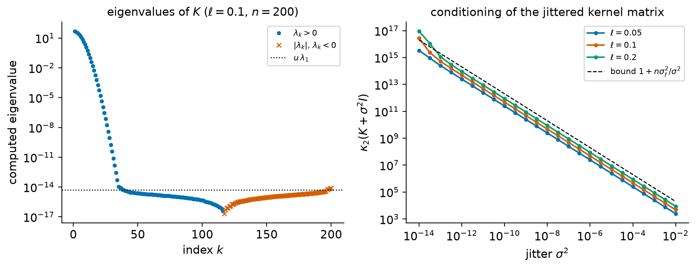
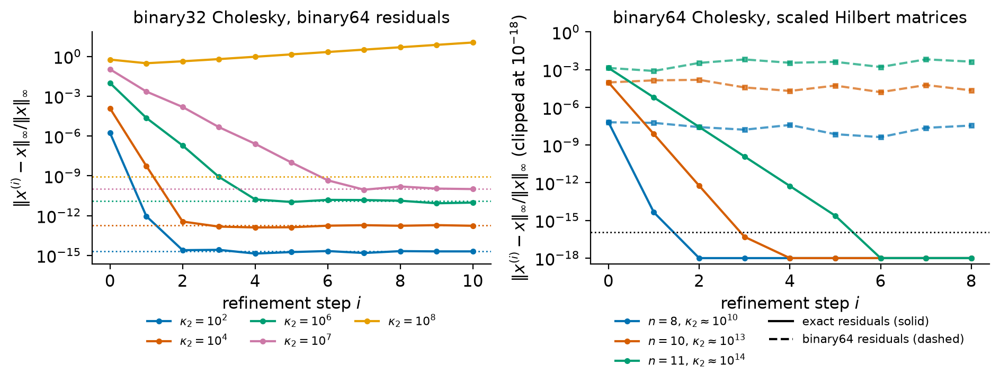
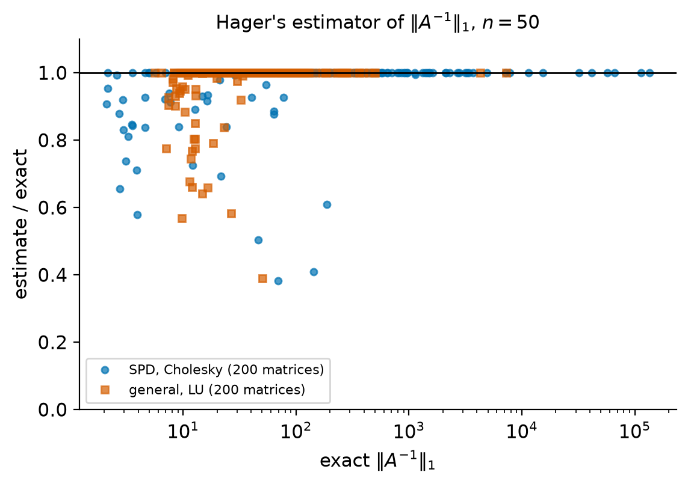

6. Cholesky factorization and iterative refinement#
Symmetric positive definite matrices are everywhere in scientific computing. They are the covariance matrices of statistics and machine learning, the stiffness and mass matrices of finite-element models, the discretizations of diffusion operators, the normal-equation matrices \(A^TA\) of least-squares problems, and the Hessians of smooth functions at nondegenerate local minimizers. For these matrices Gaussian elimination can be replaced by a factorization that exploits symmetry and positivity: the Cholesky factorization \(A = LL^T\). It needs half the arithmetic and half the storage of LU factorization, it needs no pivoting, and it is backward stable. It also doubles as a cheap and reliable test of whether a symmetric matrix is positive definite.
The second half of the chapter is about what one does after a factorization has been computed. Iterative refinement improves a computed solution by reusing the factors, and in its modern mixed-precision form it lets a fast low-precision factorization deliver a solution as accurate as a double-precision one. Condition estimation turns the error bounds of Chapter 4 into computable quantities at a cost of \(\bigO(n^2)\) flops instead of the \(\bigO(n^3)\) needed to form \(A^{-1}\). Along the way we treat symmetric indefinite matrices, for which the Bunch–Kaufman \(LDL^T\) factorization plays the role of Cholesky, and the Gaussian-process computations (log-determinants and sampling) where Cholesky is the workhorse.
Throughout, \(u = 2^{-53}\) is the unit roundoff of IEEE double precision (binary64) and \(\gamma_n = nu/(1-nu)\); we write \(u_{32} = 2^{-24}\approx 5.96\times10^{-8}\) for the unit roundoff of single precision (binary32). Trefethen and Bau [Trefethen and Bau, 1997] write \(\epsilon_{\text{machine}}\) for \(u\); we translate their statements into \(u\).
Learning objectives
After working through this chapter you should be able to:
state and prove the basic properties of symmetric positive definite matrices, including the positivity of Schur complements;
prove the existence and uniqueness of the Cholesky factorization and derive the column-oriented algorithm with its cost of \(\tfrac13 n^3\) flops;
explain why Cholesky needs no pivoting, quote its backward error bound, and distinguish its backward stability from the accuracy of the computed solution;
use Cholesky as a test for positive definiteness and explain its limits in floating-point arithmetic, including the role of symmetry;
describe the \(LDL^T\) factorization and the Bunch–Kaufman pivoting strategy for symmetric indefinite matrices;
compute Gaussian log-likelihoods and samples with Cholesky, and explain the effect of a diagonal “jitter” on conditioning;
analyze fixed-precision and mixed-precision iterative refinement and state the conditions under which it converges;
explain and implement Hager’s 1-norm condition estimator and use the LAPACK estimators available in SciPy.
6.1. Symmetric positive definite matrices#
Definition 6.1 (Symmetric positive definite matrix)
A matrix \(A\in\R^{n\times n}\) is symmetric positive definite (SPD) if \(A = A^T\) and \(x^TAx>0\) for every nonzero \(x\in\R^n\). It is symmetric positive semidefinite if \(A=A^T\) and \(x^TAx\ge0\) for all \(x\).
Symmetry is part of the definition. The quadratic form \(x^TAx\) only sees the symmetric part \((A+A^T)/2\) of \(A\), so a nonsymmetric matrix such as \(\begin{bmatrix}1&1\\-1&1\end{bmatrix}\) satisfies \(x^TAx = \|x\|_2^2>0\) but is not SPD, and nothing in this chapter applies to it.
Example 6.1 (Three families of SPD matrices)
Gram matrices. If \(B\in\R^{m\times n}\) has linearly independent columns, then \(A = B^TB\) is SPD, since \(x^TB^TBx = \|Bx\|_2^2>0\) for \(x\ne0\). The normal-equation matrix of a full-rank least-squares problem is of this form (Chapter 8).
Discrete Laplacians. The matrix \(T_n = \operatorname{tridiag}(-1,2,-1)\) of order \(n\), which discretizes \(-d^2/dt^2\) with zero boundary values, satisfies
which vanishes only if \(x_1 = 0\) and all \(x_i\) are equal, that is, only if \(x = 0\). Its eigenvalues are \(4\sin^2\big(k\pi/(2(n+1))\big)\), \(k = 1,\dots,n\). The two-dimensional Laplacian on an \(m\times m\) grid, \(I_m\otimes T_m + T_m\otimes I_m\), has as eigenvalues all sums of two eigenvalues of \(T_m\), so it is SPD as well.
Covariance and kernel matrices. If \(X\) is a random vector with finite second moments and mean \(\mu\), its covariance \(K = \mathbb{E}[(X-\mu)(X-\mu)^T]\) is positive semidefinite because \(v^TKv = \mathbb{E}[(v^T(X-\mu))^2]\ge0\), and it is SPD unless some nontrivial linear combination of the components of \(X\) is almost surely constant. The squared-exponential kernel matrix \(K_{ij} = \sigma_f^2\exp(-(t_i-t_j)^2/(2\ell^2))\) is SPD for distinct points \(t_1,\dots,t_n\). (Sketch: the kernel is the Fourier transform of a Gaussian density \(p(\omega)>0\), so \(c^TKc = \sigma_f^2\int|\sum_jc_je^{i\omega t_j}|^2p(\omega)\,d\omega\), which vanishes only if \(\sum_jc_je^{i\omega t_j} = 0\) for all \(\omega\), and exponentials with distinct frequencies \(t_j\) are linearly independent.) Kernels and their positive definiteness are discussed by Rasmussen and Williams [2006] (Chapter 4). We return to this example in Section 6.5.
The following properties are used constantly. Each is a direct consequence of the definition.
Proposition 6.1 (Properties of SPD matrices)
Let \(A\in\R^{n\times n}\) be SPD. Then:
all eigenvalues of \(A\) are positive; consequently \(A\) is nonsingular, \(\det A>0\), \(A^{-1}\) is SPD, \(\|A\|_2 = \lambda_{\max}(A)\) and \(\kappa_2(A) = \lambda_{\max}(A)/\lambda_{\min}(A)\). Conversely, a symmetric matrix with positive eigenvalues is SPD;
every principal submatrix \(A(\mathcal I,\mathcal I)\), \(\mathcal I\subseteq\{1,\dots,n\}\), is SPD; in particular \(a_{ii}>0\);
\(|a_{ij}|<\sqrt{a_{ii}a_{jj}}\) for \(i\ne j\); in particular the largest entry of \(A\) in absolute value lies on the diagonal;
\(X^TAX\) is SPD for every \(X\in\R^{n\times k}\) with linearly independent columns.
Proof. (1) If \(Aq = \lambda q\) with \(\|q\|_2 = 1\) then \(\lambda = q^TAq>0\). The determinant is the product of the eigenvalues, and \(A^{-1}\) is symmetric with eigenvalues \(1/\lambda_i>0\). For symmetric \(A\) the formula \(\|A\|_2^2 = \lambda_{\max}(A^TA) = \lambda_{\max}(A^2)\) of Theorem 1.4 gives \(\|A\|_2 = \lambda_{\max}(A)\), and applying it to \(A^{-1}\) gives the condition number. Conversely, if \(A = Q\Lambda Q^T\) with \(Q\) orthogonal and \(\Lambda>0\), then \(x^TAx = \sum_i\lambda_i(q_i^Tx)^2>0\) for \(x\ne0\).
(2) Given \(y\ne0\) indexed by \(\mathcal I\), extend it by zeros to \(x\in\R^n\). Then \(y^TA(\mathcal I,\mathcal I)y = x^TAx>0\). The case \(\mathcal I = \{i\}\) gives \(a_{ii}>0\).
(3) By (2) with \(\mathcal I = \{i,j\}\) the matrix \(\begin{bmatrix}a_{ii}&a_{ij}\\a_{ij}&a_{jj}\end{bmatrix}\) is SPD, so by (1) its determinant \(a_{ii}a_{jj}-a_{ij}^2\) is positive. Hence \(|a_{ij}|<\sqrt{a_{ii}a_{jj}}\le\max(a_{ii},a_{jj})\).
(4) \(X^TAX\) is symmetric, and for \(y\ne0\) we have \(Xy\ne0\), so \(y^TX^TAXy = (Xy)^TA(Xy)>0\).
Property 4 with a nonsingular \(X\) says that SPD-ness is preserved by congruence \(A\mapsto X^TAX\), although eigenvalues are not. The key to everything that follows is that eliminating one variable from an SPD system leaves an SPD system.
Lemma 6.1 (Schur complements of SPD matrices)
Let \(A = A^T\) be partitioned as
If \(A\) is SPD, then \(A_{11}\) and the Schur complement \(S = A_{22} - A_{21}A_{11}^{-1}A_{21}^T\) are SPD. Conversely, if \(A_{11}\) and \(S\) are SPD, then \(A\) is SPD.
Proof. Suppose \(A\) is SPD. Then \(A_{11}\) is SPD by Proposition 6.1, part 2, so it is invertible and \(S\) is defined and symmetric. Given \(y\ne0\), set \(z = \begin{bmatrix}-A_{11}^{-1}A_{21}^Ty\\ y\end{bmatrix}\), which is nonzero because its second block is. Writing \(w = -A_{11}^{-1}A_{21}^Ty\),
so \(y^TSy = z^TAz>0\). For the converse, multiply out to check the block factorization
The middle factor is SPD when \(A_{11}\) and \(S\) are, and the outer factors are \(X^T\) and \(X\) for a nonsingular \(X\), so \(A\) is SPD by Proposition 6.1, part 4.
For \(k = 1\), writing \(\alpha = a_{11}\) and \(b = A(2{:}n,1)\), the Schur complement is \(S = A_{22} - bb^T/\alpha\): exactly the matrix that remains after one step of Gaussian elimination without pivoting (Chapter 5). The lemma therefore says that Gaussian elimination on an SPD matrix never meets a zero or negative pivot.
Check your understanding
Is \(A = \begin{bmatrix}1&2\\2&5\end{bmatrix}\) SPD? Is \(B = \begin{bmatrix}1&2\\2&3\end{bmatrix}\)? Answer using a Schur complement rather than eigenvalues.
Answer. For \(A\), \(a_{11} = 1>0\) and \(S = 5 - 2\cdot2/1 = 1>0\), so \(A\) is SPD by Lemma 6.1. For \(B\), \(S = 3-4 = -1<0\), so \(B\) is not SPD; indeed \(x = (-2,1)^T\) gives \(x^TBx = -1\), which is the vector \(z\) of the proof. Note that \(B\) has a positive diagonal: property 2 of Proposition 6.1 is necessary, not sufficient, and \(B\) violates property 3 since \(|b_{12}| = 2>\sqrt3\).
6.2. The Cholesky factorization#
6.2.1. Existence and uniqueness#
We use the convention \(A = LL^T\) with \(L\) lower triangular throughout this chapter. The equivalent upper-triangular form \(A = R^TR\) with \(R = L^T\) is used by Trefethen and Bau, by Higham, and by SciPy by default; we translate results stated for \(R\) when we quote them.
Theorem 6.1 (Cholesky factorization)
Every SPD matrix \(A\in\R^{n\times n}\) has a unique factorization \(A = LL^T\) in which \(L\in\R^{n\times n}\) is lower triangular with positive diagonal entries. The matrix \(L\) is the Cholesky factor of \(A\).
Proof. We use induction on \(n\). For \(n = 1\), \(A = (a_{11})\) with \(a_{11}>0\), and \(L = (\sqrt{a_{11}})\) is the only \(1\times1\) factor with a positive entry.
Let \(n>1\) and suppose the result holds for order \(n-1\). Partition
with \(\alpha,\lambda\in\R\), \(b,\ell\in\R^{n-1}\) and \(C,L_S\in\R^{(n-1)\times(n-1)}\). Multiplying out,
so \(A = LL^T\) holds if and only if
Since \(\alpha = a_{11}>0\), the first equation has exactly one positive solution, \(\lambda = \sqrt\alpha\). The second then forces \(\ell = b/\lambda\), and the third becomes \(L_SL_S^T = C - bb^T/\alpha = S\), the Schur complement of \(\alpha\). By Lemma 6.1, \(S\) is SPD of order \(n-1\), so by the induction hypothesis there is exactly one lower triangular \(L_S\) with positive diagonal satisfying the third equation. Every choice in the construction was forced, which proves both existence and uniqueness.
The positivity of the diagonal is what makes the factor unique: changing the sign of any column of \(L\) leaves \(LL^T\) unchanged.
Theorem 6.2 (Characterizations of positive definiteness)
For a symmetric \(A\in\R^{n\times n}\) the following are equivalent:
\(A\) is SPD;
\(A = LL^T\) with \(L\) lower triangular with positive diagonal;
\(A = B^TB\) for some nonsingular \(B\in\R^{n\times n}\);
every leading principal minor \(\det A_k\), \(A_k = A(1{:}k,1{:}k)\), is positive (Sylvester’s criterion).
Proof. (1)\(\Rightarrow\)(2) is Theorem 6.1, (2)\(\Rightarrow\)(3) takes \(B = L^T\), and (3)\(\Rightarrow\)(1) is the Gram-matrix argument of Example 6.1. (1)\(\Rightarrow\)(4) holds because each \(A_k\) is SPD and so has positive determinant. For (4)\(\Rightarrow\)(2) use induction on \(n\) as in the proof of Theorem 6.1: \(\alpha = \det A_1>0\), and for \(k\le n-1\) the leading \(k\times k\) block of \(S = C - bb^T/\alpha\) is the Schur complement of \(\alpha\) in \(A_{k+1}\), so \(\det A_{k+1} = \alpha\det S_k\) and \(\det S_k>0\). By induction \(S = L_SL_S^T\), and \(L\) is assembled from \(\sqrt\alpha\), \(b/\sqrt\alpha\) and \(L_S\) as before.
The proof shows more: the squared diagonal entries of \(L\) are ratios of leading principal minors, \(\ell_{kk}^2 = \det A_k/\det A_{k-1}\) (Exercise 6.2), so \(\det A = \prod_k\ell_{kk}^2\).
Important
Library conventions. numpy.linalg.cholesky(A) returns the lower
triangular \(L\) with \(A = LL^T\) (in the NumPy 2 release used here, the
keyword upper=True returns \(L^T\) instead). scipy.linalg.cholesky(A) returns the
upper triangular \(R = L^T\) with \(A = R^TR\) unless lower=True is passed.
scipy.linalg.cho_factor returns a pair (c, lower) intended only for
scipy.linalg.cho_solve; it also defaults to the upper triangle, and its
documentation warns that the unused triangle of c may contain arbitrary
data (in SciPy 1.18 this happens when overwrite_a=True). All of these call
the LAPACK routine ?potrf, and all of them read only one triangle of \(A\)
without checking symmetry. scipy.linalg.solve(A, b, assume_a="pos")
solves an SPD system by Cholesky.
6.2.2. Derivation of the algorithm#
The proof of Theorem 6.1 is already an algorithm: compute \(\lambda\) and \(\ell\), form the Schur complement, and repeat. An equivalent column-by-column form comes from equating entries. For \(i\ge j\) the \((i,j)\) entry of \(LL^T\) is \(\sum_{k=1}^{j}\ell_{ik}\ell_{jk}\), because \(\ell_{jk} = 0\) for \(k>j\). Solving for the last term of each sum gives
Column \(j\) of \(L\) depends only on columns \(1,\dots,j-1\), so the columns can be computed from left to right. The sums over \(k\) for all \(i>j\) at once form a matrix-vector product, which is how the algorithm should be written in NumPy.
Algorithm 6.1 (Cholesky factorization (column-oriented))
Input: a symmetric \(A\in\R^{n\times n}\) (only its lower triangle is read).
Output: the lower triangular \(L\) with \(A = LL^T\), or a report that \(A\) is not positive definite.
For \(j = 1,\dots,n\):
\(d \leftarrow a_{jj} - L(j,1{:}j-1)\,L(j,1{:}j-1)^T\).
If \(d\le0\), stop: \(A\) is not positive definite.
\(\ell_{jj}\leftarrow\sqrt d\).
\(L(j+1{:}n,\,j)\leftarrow\big(A(j+1{:}n,\,j) - L(j+1{:}n,\,1{:}j-1)\,L(j,1{:}j-1)^T\big)/\ell_{jj}\).
The last step of the loop is a matrix-vector product with the already
computed part of \(L\) (level-2 BLAS). Production codes such as LAPACK’s
?potrf use a blocked version in which most of the work is done by
matrix-matrix operations (level-3 BLAS), for the reasons explained in
Chapter 1; see Golub and Van Loan [2013] (Section 4.2).
Proposition 6.2 (Cost of the Cholesky factorization)
Algorithm 6.1 performs \(\tfrac13n^3 + \tfrac12n^2 - \tfrac56n\) flops and \(n\) square roots. The leading term \(\tfrac13n^3\) is half the \(\tfrac23n^3\) flops of LU factorization.
Proof. At step \(j\), forming \(d\) takes \(j-1\) multiplications and \(j-1\) subtractions. Each of the \(n-j\) entries \(\ell_{ij}\), \(i>j\), takes \(j-1\) multiplications, \(j-1\) subtractions and one division. The total is
using \(\sum_{j=1}^n(n-j)(j-1) = n(n-1)(n-2)/6\) and \(\sum_{j=1}^n(n-j) = n(n-1)/2\). Expanding gives \(\tfrac13n^3 + \tfrac12n^2 - \tfrac56n\).
Once \(L\) is known, \(Ax = b\) is solved by forward substitution \(Ly = b\) and back substitution \(L^Tx = y\), each costing \(n^2\) flops to leading order, so a solve costs \(\tfrac13n^3 + 2n^2\) flops. Only the \(n(n+1)/2\) entries of the lower triangle of \(A\) are read, and \(L\) can overwrite them.
Example 6.2 (A \(3\times3\) Cholesky factorization by hand)
Let
Column 1: \(\ell_{11} = \sqrt1 = 1\), \(\ell_{21} = 1/1 = 1\), \(\ell_{31} = 0\). Column 2: \(\ell_{22} = \sqrt{2-1^2} = 1\) and \(\ell_{32} = (2 - 0\cdot1)/1 = 2\). Column 3: \(\ell_{33} = \sqrt{5 - 0^2 - 2^2} = 1\). Hence
and one checks \(LL^T = A\). Forward substitution in \(Ly = b\) gives \(y = (2, 3, 1)^T\), and back substitution in \(L^Tx = y\) gives \(x = (1,1,1)^T\). Finally \(\det A = (\ell_{11}\ell_{22}\ell_{33})^2 = 1\). Note that \(\ell_{32} = 2\) is larger than the diagonal entry \(\ell_{22} = 1\) of its column; we return to this below.
6.2.3. Bounded entries and no pivoting#
For LU factorization, pivoting is needed to keep the entries of the factors from growing (Chapter 5). For Cholesky no pivoting is needed, because the entries of \(L\) are bounded by the entries of \(A\).
Proposition 6.3 (Entry bound and growth)
Let \(A = LL^T\) be SPD. Then
Moreover, every entry of every Schur complement produced by the algorithm (equivalently, by Gaussian elimination without pivoting) is bounded in absolute value by \(\max_{i}a_{ii} = \max_{i,j}|a_{ij}|\), so the growth factor of Gaussian elimination without pivoting on an SPD matrix equals 1.
Proof. The diagonal entry \((i,i)\) of \(A = LL^T\) is \(a_{ii} = \sum_{k=1}^{i}\ell_{ik}^2\), a sum of nonnegative terms, so each term is at most \(a_{ii}\). For the growth statement, the diagonal entries of \(S = C - bb^T/\alpha\) are \(s_{ii} = c_{ii} - b_i^2/\alpha\le c_{ii}\), so diagonal entries never increase; \(S\) is SPD by Lemma 6.1, so its largest entry is on its diagonal by Proposition 6.1, part 3. By induction the entries of all Schur complements are bounded by \(\max_ia_{ii}\), which by the same part 3 equals \(\max_{i,j}|a_{ij}|\).
Warning
It is not true that \(|\ell_{ij}|\le\ell_{jj}\), a statement that appeared in an earlier version of these notes. The \(2\times2\) matrix \(\begin{bmatrix}1&2\\2&5\end{bmatrix}\) has \(L = \begin{bmatrix}1&0\\2&1\end{bmatrix}\) with \(\ell_{21} = 2>\ell_{11} = 1\), and Example 6.2 has \(\ell_{32} = 2>\ell_{22} = 1\). The correct bound runs along rows of \(L\): \(|\ell_{ij}|\le\sqrt{a_{ii}}\) (here \(2\le\sqrt5\)). The lab counts the violations of the false bound on random SPD matrices.
For a general matrix the reason for pivoting is that the multipliers and
the Schur complements can be large. For an SPD matrix neither can happen,
and the diagonal pivot is always the right choice in the sense that it is
positive. Symmetric pivoting \(PAP^T\) is still useful for other purposes,
such as computing a rank-revealing factorization of a positive
semidefinite matrix (LAPACK’s ?pstrf; see Higham [2002],
Section 10.3) or reducing fill-in for sparse matrices
(Chapter 11).
Warning
Half the flops does not mean half the time. In the lab, SciPy’s
lu_factor (LAPACK ?getrf) and cho_factor (LAPACK ?potrf) are timed
on the same SPD matrices, and the measured ratio of their run times need
not be close to 2 on the machine that executes it. The two routines differ
in more than the flop count: LU searches for pivots and interchanges rows,
and the two blocked codes are parallelized differently. An earlier version
of these notes compared Cholesky with scipy.linalg.lu, which in addition
forms the explicit matrices \(P\), \(L\) and \(U\), and then called the
resulting ratio a confirmation of “theory”. The flop ratio is the
machine-independent prediction; a timing is an observation on one machine.
Check your understanding
The matrix \(A = \begin{bmatrix}4&2\\2&2\end{bmatrix}\) is SPD. Find its Cholesky factor, and verify the entry bound.
Answer. \(\ell_{11} = 2\), \(\ell_{21} = 2/2 = 1\) and \(\ell_{22} = \sqrt{2-1} = 1\), so \(L = \begin{bmatrix}2&0\\1&1\end{bmatrix}\). Row 2 gives \(\ell_{21}^2+\ell_{22}^2 = 2 = a_{22}\), and indeed \(|\ell_{21}|,\ell_{22}\le\sqrt2\).
6.3. Stability, and Cholesky as a test for definiteness#
6.3.1. Backward error analysis#
The entry bound makes the rounding error analysis of Cholesky short and its conclusion strong. We quote the results in our notation; Higham states them for \(R = L^T\).
Theorem 6.3 (Backward error of the Cholesky factorization)
If Algorithm 6.1 applied to the SPD matrix \(A\in\R^{n\times n}\) runs to completion in floating-point arithmetic with unit roundoff \(u\), the computed factor \(\widehat L\) satisfies
where absolute values and inequalities hold entrywise [Higham, 2002] (Theorem 10.3).
Proof. We only sketch the argument. Each computed entry \(\hat\ell_{ij}\) is obtained from (6.1) by an inner product, a subtraction and a division (or square root). The standard analysis of such “solve for the last term” computations [Higham, 2002] (Chapter 8) shows that \(\big|a_{ij} - \sum_{k=1}^{j}\hat\ell_{ik}\hat\ell_{jk}\big| \le\gamma_j\sum_{k=1}^{j}|\hat\ell_{ik}||\hat\ell_{jk}|\) for \(i>j\); the square root on the diagonal contributes one more rounding error and \(\gamma_{j+1}\). Since \(\gamma_j\le\gamma_{n+1}\), this is (6.2) entry by entry.
The bound is componentwise, but relative to \(|\widehat L||\widehat L|^T\) rather than to \(|A|\). What makes it useful is that \(|\widehat L||\widehat L|^T\) cannot be large compared with \(A\).
Corollary 6.1 (Normwise backward stability)
Under the hypotheses of Theorem 6.3, if \(\gamma_{n+1}<1\),
Proof. For a matrix \(M\) and a nonnegative matrix \(N\ge|M|\) we have \(\|M\|_2\le\|N\|_2\), because \(\|Mx\|_2\le\|N|x|\|_2\) for every \(x\). Hence \(\|\Delta A\|_2\le\gamma_{n+1}\|\,|\widehat L|\,|\widehat L|^T\|_2 = \gamma_{n+1}\|\,|\widehat L|\,\|_2^2\le\gamma_{n+1}\|\widehat L\|_F^2\), using \(\|B\|_2\le\|B\|_F\) from Theorem 1.5. Next, \(\|\widehat L\|_F^2 = \trace(\widehat L\widehat L^T) = \trace(A) + \trace(\Delta A)\), and the diagonal of (6.2) gives \(|\trace(\Delta A)|\le\gamma_{n+1}\trace(|\widehat L||\widehat L|^T) = \gamma_{n+1}\|\widehat L\|_F^2\). Therefore \(\|\widehat L\|_F^2\le\trace(A)/(1-\gamma_{n+1})\). Finally \(\trace(A) = \sum_i\lambda_i\le n\lambda_{\max} = n\|A\|_2\).
The constant \(n\gamma_{n+1}\approx n^2u\) is a worst-case bound; the backward errors observed in practice are of order \(u\), as Figure 6.1 shows. What matters is that no growth factor appears: in contrast with LU with partial pivoting (Chapter 5), there is no matrix for which the bound is large compared with \(n^2u\|A\|_2\). The triangular solves are backward stable too, and the complete solution process satisfies the following.
Theorem 6.4 (Backward error of a Cholesky solve)
If Cholesky factorization of the SPD matrix \(A\) runs to completion, the computed solution \(\hat x\) of \(Ax = b\) obtained by forward and back substitution with \(\widehat L\) satisfies
[Higham, 2002] (Theorem 10.4). Consequently \(\|\Delta A\|_2\le n\gamma_{3n+1}\|A\|_2/(1-\gamma_{n+1})\), and
Proof. The normwise bound follows exactly as in Corollary 6.1. For the forward error, subtract \(Ax = b\) from \((A+\Delta A)\hat x = b\) to get \(x - \hat x = A^{-1}\Delta A\,\hat x\), and take norms.
Cholesky is thus backward stable in the sense of Chapter 4, and the forward error of the computed solution is at most about \(\kappa_2(A)\) times the backward error. Trefethen and Bau [Trefethen and Bau, 1997] (Lecture 23) state the same conclusion normwise, as \(\|\Delta A\|/\|A\| = \bigO(u)\).


Figure 6.1 Cholesky solves of \(Ax = b\) for random SPD matrices of order \(n = 100\) with prescribed \(\kappa_2(A)\) from \(10^1\) to \(10^{15}\). The backward errors of the factorization and of the solve never exceed \(2u\), whatever the conditioning; the forward error grows like \(\kappa_2(A)u\). Backward stability does not mean accuracy for ill-conditioned problems.#
6.3.2. A test for positive definiteness#
Because the algorithm breaks down exactly when a nonpositive pivot appears, it decides positive definiteness.
Theorem 6.5 (Cholesky decides positive definiteness)
Let \(A\in\R^{n\times n}\) be symmetric. In exact arithmetic, Algorithm 6.1 runs to completion (all \(d>0\)) if and only if \(A\) is positive definite. If it stops at step \(j\) with \(d\le0\), then the leading submatrix \(A_j\) is not positive definite, and the vector \(z = \big[-(L_{j-1}^{-T}L_{j-1}^{-1}A(1{:}j-1,j))^T,\ 1,\ 0,\dots,0\big]^T\) satisfies \(z^TAz = d\le0\), where \(L_{j-1}\) is the computed leading block.
Proof. If \(A\) is SPD, the algorithm computes the factor of Theorem 6.1, and \(d = \ell_{jj}^2>0\) at every step. If it completes, \(A = LL^T\) with positive diagonal, which is SPD by Theorem 6.2. Suppose it stops at step \(j\). Steps \(1,\dots,j-1\) succeeded, so \(A_{j-1} = L_{j-1}L_{j-1}^T\) is SPD, and \(d = a_{jj} - c^TA_{j-1}^{-1}c\) with \(c = A(1{:}j-1,j)\) is the Schur complement of \(A_{j-1}\) in \(A_j\), because the computed row \(L(j,1{:}j-1)^T = L_{j-1}^{-1}c\) gives \(L(j,1{:}j-1)L(j,1{:}j-1)^T = c^TA_{j-1}^{-1}c\). The vector \(w = [-(A_{j-1}^{-1}c)^T, 1]^T\) is the vector of the proof of Lemma 6.1, so \(w^TA_jw = d\le0\), and \(z\) is \(w\) padded with zeros.
The test costs at most \(\tfrac13n^3\) flops, several times less than computing eigenvalues, and when it fails it produces a certificate \(z\). In floating-point arithmetic three caveats apply.
Symmetry is assumed, not tested. The algorithm reads only the lower
triangle, so applied to a nonsymmetric matrix it factors a different,
symmetric matrix. For \(A = \begin{bmatrix}4&3\\1&2\end{bmatrix}\) it computes
\(\ell_{11} = 2\), \(\ell_{21} = 1/2\), \(\ell_{22} = \sqrt{7}/2\) and “succeeds”,
but \(LL^T = \begin{bmatrix}4&1\\1&2\end{bmatrix}\ne A\). An earlier version of
the lab reported exactly this outcome as “succeeded (unexpected)”.
Library routines document this behavior, and which triangle they read
matters: numpy.linalg.cholesky reads the lower triangle and returns the
factor above, whereas scipy.linalg.cholesky, which by default reads the
upper triangle, sees the indefinite matrix
\(\begin{bmatrix}4&3\\3&2\end{bmatrix}\) and raises LinAlgError. Our own
implementation must choose a convention and state it. In the lab we reject input unless
\(\max_{i,j}|a_{ij}-a_{ji}|\le10nu\max_{i,j}|a_{ij}|\), which admits
matrices that are symmetric up to rounding errors (such as a computed
\(B^TB\)), and then read only the lower triangle. If a matrix is known to be
symmetric in exact arithmetic but was computed with rounding errors, the
right repair is \((A+A^T)/2\), the nearest symmetric matrix in the Frobenius
norm (Exercise 6.3).
Success certifies a nearby matrix. By Theorem 6.3, successful completion shows that \(A+\Delta A\) is SPD for a \(\Delta A\) of relative size about \(n^2u\). It does not prove that \(A\) itself is positive definite when \(A\) has eigenvalues of size \(\bigO(n^2u\|A\|_2)\).
Failure can occur for SPD matrices that are nearly singular. A sufficient condition for success, due to Demmel, requires the smallest eigenvalue of the scaled matrix \(D^{-1}AD^{-1}\), \(D = \diag(a_{ii}^{1/2})\), to exceed a quantity of order \(n^2u\) [Higham, 2002] (Section 10.1). For matrices closer to singularity the algorithm may meet \(d\le0\), and often the stored matrix is no longer positive definite at all.
Example 6.3 (The Hilbert matrix of order 14)
The Hilbert matrix \(H_n\), \(h_{ij} = 1/(i+j-1)\), is SPD for every \(n\): it is
the Gram matrix of the monomials \(1,t,\dots,t^{n-1}\) in \(L^2(0,1)\). In
double precision, numpy.linalg.cholesky succeeds for \(H_{13}\) and fails
for \(H_{14}\). The failure is correct. Computing the \(LDL^T\) factorization of
the stored matrix \(\fl(H_{14})\) exactly, in rational arithmetic, gives a
negative pivot: rounding the entries of \(H_{14}\) to double precision has
already destroyed positive definiteness, because the smallest eigenvalue of
\(H_{14}\) is far smaller than the rounding errors in its entries. The same
exact computation shows that \(\fl(H_{13})\) is still positive definite. The
lab carries out both computations.
6.4. \(LDL^T\) and symmetric indefinite matrices#
6.4.1. The \(LDL^T\) factorization#
Pulling the diagonal out of the Cholesky factor gives a square-root-free variant: if \(A = LL^T\) and \(D_0 = \diag(\ell_{11},\dots,\ell_{nn})\), then \(A = (LD_0^{-1})D_0^2(LD_0^{-1})^T\) with a unit lower triangular factor. The same form exists for many indefinite matrices.
Theorem 6.6 (\(LDL^T\) factorization)
Let \(A\in\R^{n\times n}\) be symmetric with all leading principal submatrices \(A_1,\dots,A_n\) nonsingular. Then there is a unique factorization \(A = LDL^T\) with \(L\) unit lower triangular and \(D\) diagonal. Moreover \(d_k = \det A_k/\det A_{k-1}\) (with \(\det A_0 = 1\)), so \(A\) is SPD if and only if all \(d_k>0\), in which case \(LD^{1/2}\) is the Cholesky factor.
Proof. Under the hypothesis, \(A\) has a unique factorization \(A = LU\) with \(L\) unit lower triangular and \(U\) upper triangular and nonsingular (Chapter 5). Let \(D = \diag(u_{11},\dots,u_{nn})\) and \(M^T = D^{-1}U\), which is unit upper triangular. Then \(A = LDM^T\), and \(A = A^T = M(DL^T)\) is another factorization into a unit lower triangular matrix \(M\) and an upper triangular matrix \(DL^T\). By uniqueness of the LU factorization, \(M = L\). Comparing leading blocks, \(\det A_k = \prod_{i\le k}d_i\), which gives the formula for \(d_k\). If all \(d_k>0\), \(A = (LD^{1/2})(LD^{1/2})^T\) is SPD; conversely an SPD matrix has positive leading minors by Theorem 6.2. Uniqueness of \(L\) and \(D\) follows from the uniqueness of the LU factorization.
For SPD matrices \(LDL^T\) offers little beyond avoiding \(n\) square roots; its flop count also has leading term \(\tfrac13n^3\) (Exercise 6.4). For a symmetric indefinite matrix it is not enough, for two reasons.
Example 6.4 (Why symmetric indefinite matrices need \(2\times2\) pivots)
The matrix \(A = \begin{bmatrix}0&1\\1&0\end{bmatrix}\) is symmetric, nonsingular and indefinite (eigenvalues \(\pm1\)), but it has no \(LDL^T\) factorization with diagonal \(D\), since that would require \(d_1 = a_{11} = 0\) and then \(\ell_{21}d_1 = a_{21} = 1\). Symmetric permutations \(PAP^T\) do not help, because they only reorder the diagonal, which is zero. For \(A(\epsilon) = \begin{bmatrix}\epsilon&1\\1&1\end{bmatrix}\) with small \(\epsilon\neq0\) the factorization exists,
but its entries are of size \(1/\epsilon\), which is the instability of Gaussian elimination without pivoting all over again. Row interchanges as in partial pivoting would cure it but destroy symmetry.
6.4.2. Bunch–Kaufman pivoting#
The remedy of Bunch and Kaufman [Bunch and Kaufman, 1977] is to allow \(2\times2\) diagonal blocks and to choose them by a symmetric pivoting strategy that inspects only two columns per step. The result is a factorization
with \(P\) a permutation, \(L\) unit lower triangular and \(D\) block diagonal with blocks of order 1 and 2. At each step a pivot block \(E\) (of order \(s = 1\) or \(2\)) is moved to the top left of the remaining matrix, and the Schur complement of \(E\) is formed, exactly as in Lemma 6.1. The strategy below uses the constant \(\alpha = (1+\sqrt{17})/8\approx0.6404\).
Algorithm 6.2 (Bunch–Kaufman pivot choice (one step))
Input: the current symmetric matrix \(A\) (the active Schur complement).
Output: a pivot of order 1 or 2 and the symmetric interchange that brings it to the top left.
Let \(\omega_1 = \max_{i>1}|a_{i1}|\), attained at row \(r\). If \(\omega_1 = 0\), the first column is already eliminated; take \(a_{11}\) as a \(1\times1\) pivot (no elimination is needed).
If \(|a_{11}|\ge\alpha\omega_1\), use \(a_{11}\) as a \(1\times1\) pivot.
Otherwise let \(\omega_r = \max_{i\ne r}|a_{ir}|\) (so \(\omega_r\ge\omega_1\)).
If \(|a_{11}|\,\omega_r\ge\alpha\omega_1^2\), use \(a_{11}\) as a \(1\times1\) pivot.
Else, if \(|a_{rr}|\ge\alpha\omega_r\), interchange rows and columns 1 and \(r\) and use \(a_{rr}\) as a \(1\times1\) pivot.
Else interchange rows and columns 2 and \(r\) and use \(E = \begin{bmatrix}a_{11}&a_{r1}\\a_{r1}&a_{rr}\end{bmatrix}\) as a \(2\times2\) pivot.
The value of \(\alpha\) is chosen so that the worst-case growth of the entries over two \(1\times1\) steps equals that over one \(2\times2\) step (Exercise 6.7). With this choice the growth factor satisfies \(\rho_n\le(1+1/\alpha)^{n-1}<2.57^{n-1}\) [Bunch and Kaufman, 1977], comparable to the bound \(2^{n-1}\) for partial pivoting, and the method is normwise backward stable [Higham, 2002] (Chapter 11). It costs \(\tfrac13n^3\) flops, like Cholesky, plus \(\bigO(n^2)\) comparisons, and stores only one triangle. One caveat is worth knowing: the entries of \(L\) are not bounded by a constant, which matters in some applications and has led to variants such as rook pivoting. See Higham [2002] (Chapter 11) and Golub and Van Loan [2013] (Section 4.4) for these and for Aasen’s alternative.
Remark 6.1 (Inertia)
By Sylvester’s law of inertia, the congruent matrices \(A\) and \(D\) have the same numbers of positive, negative and zero eigenvalues. Each \(2\times2\) block chosen in the last case of the pivot choice has one positive and one negative eigenvalue, because its determinant is negative: from the failed tests, \(|a_{11}a_{rr}|\le\alpha|a_{11}|\,\omega_r<\alpha^2\omega_1^2<a_{r1}^2\), using \(|a_{rr}|<\alpha\omega_r\), then \(|a_{11}|\omega_r<\alpha\omega_1^2\), then \(\alpha<1\) and \(\omega_1 = |a_{r1}|\). Counting signs in \(D\) therefore gives the inertia of \(A\) at the cost of one factorization; this is how the number of eigenvalues of a symmetric matrix below a shift \(\sigma\) is computed, by factoring \(A-\sigma I\).
In SciPy, scipy.linalg.ldl returns the factors of the LAPACK routine
?sytrf, which implements Bunch–Kaufman pivoting, and
scipy.linalg.solve(A, b, assume_a="sym") solves a symmetric indefinite
system with it. For \(A(\epsilon)\) above with \(\epsilon = 10^{-8}\), the
strategy interchanges the two rows and columns (second case of step 3,
since
\(|a_{22}| = 1\ge\alpha\)) and produces factors with entries of size 1; for
\(\begin{bmatrix}0&1\\1&0\end{bmatrix}\) it returns \(D = A\) as a single
\(2\times2\) block.
6.5. Gaussian distributions and Gaussian processes#
6.5.1. Log-determinants and sampling#
A Gaussian random vector \(y\sim N(\mu,K)\) in \(\R^n\) with SPD covariance \(K\) has log-density
Every term is computed from the Cholesky factor \(K = LL^T\) without forming \(K^{-1}\) or \(\det K\).
Proposition 6.4 (Gaussian computations with the Cholesky factor)
Let \(K = LL^T\) be SPD.
With \(z = L^{-1}(y-\mu)\) (one forward substitution), \((y-\mu)^TK^{-1}(y-\mu) = \|z\|_2^2\).
\(\log\det K = 2\sum_{i=1}^n\log\ell_{ii}\).
If \(w\sim N(0,I_n)\), then \(y = \mu + Lw\sim N(\mu,K)\). Conversely \(L^{-1}(y-\mu)\sim N(0,I_n)\) (“whitening”).
Proof. (1) \(K^{-1} = L^{-T}L^{-1}\), so the quadratic form is \((L^{-1}(y-\mu))^T(L^{-1}(y-\mu))\). (2) \(\det K = \det(L)^2 = \prod_i\ell_{ii}^2\), and all \(\ell_{ii}>0\). (3) An affine image of a Gaussian vector is Gaussian, with mean \(\mu+L\,\mathbb{E}w = \mu\) and covariance \(\mathbb{E}[Lww^TL^T] = LL^T = K\); the converse is the same computation with \(L^{-1}\).
Any factorization \(K = BB^T\) could be used for sampling (for instance the
symmetric square root), but the Cholesky factor is the cheapest and its
triangular structure makes the solves in part 1 cheap as well. Working with
logarithms is not optional. For \(n\) in the hundreds, \(\det K\) routinely
overflows or underflows: \(\det(10I_{400}) = 10^{400}\) is not representable
in double precision, and for the kernel matrix of
Figure 6.2 with a jitter of \(10^{-6}\), numpy.linalg.det
returns \(0\) while \(2\sum_i\log\ell_{ii}\approx-2506\) agrees with
numpy.linalg.slogdet.
Example 6.5 (A \(2\times2\) Gaussian log-density)
Let \(K = \begin{bmatrix}4&2\\2&2\end{bmatrix}\), \(\mu = 0\) and \(y = (2,0)^T\). From the check above, \(L = \begin{bmatrix}2&0\\1&1\end{bmatrix}\). Forward substitution gives \(z = (1,-1)^T\), so \(y^TK^{-1}y = 2\), and \(\log\det K = 2(\log2+\log1) = \log4\), consistent with \(\det K = 4\). Hence \(\log p(y) = -1 - \log2 - \log(2\pi)\). A sample of \(N(0,K)\) is \((2w_1,\ w_1+w_2)^T\) with independent standard normal \(w_1,w_2\); its variances are \(4\) and \(2\) and its covariance is \(2\), as required.
6.5.2. Gaussian-process regression#
In Gaussian-process regression [Rasmussen and Williams, 2006] (Chapter 2) one observes \(y_i = f(t_i) + \varepsilon_i\), \(i = 1,\dots,n\), where \(f\) has a Gaussian-process prior with covariance function \(k\) and the noise \(\varepsilon_i\sim N(0,\sigma^2)\) is independent. With \(K_{ij} = k(t_i,t_j)\) and \(K_y = K+\sigma^2I\), the posterior mean at a new point \(t_*\) is \(k_*^TK_y^{-1}y\), where \((k_*)_i = k(t_*,t_i)\), and the log marginal likelihood used to fit the parameters of \(k\) is (6.3) with \(K = K_y\) and \(\mu = 0\). The standard implementation [Rasmussen and Williams, 2006] (Algorithm 2.1) is: compute \(L\) with \(K_y = LL^T\); solve \(Lz = y\) and \(L^Ta = z\); then the posterior mean is \(k_*^Ta\) and the log likelihood is \(-\tfrac12\|z\|_2^2 - \sum_i\log\ell_{ii} - \tfrac n2\log(2\pi)\). The cost is \(\tfrac13n^3\) flops for the factorization and \(\bigO(n^2)\) for everything else.
Kernel matrices of smooth covariance functions are notoriously ill conditioned. For the squared-exponential kernel on closely spaced points the eigenvalues decay faster than exponentially, and most of them are smaller than the rounding errors \(u\lambda_{\max}\) made in forming \(K\) (left panel of Figure 6.2). The computed matrix is then typically indefinite, and Cholesky fails. The standard fix is to add a small multiple of the identity, called jitter or a nugget, which is the same as assuming a small observation noise \(\sigma^2\).
Proposition 6.5 (Conditioning of a jittered kernel matrix)
If \(K\) is symmetric positive semidefinite and \(\sigma^2>0\), then \(K+\sigma^2I\) is SPD and
For a stationary kernel with \(k(t,t) = \sigma_f^2\), \(\trace(K) = n\sigma_f^2\) and the bound is \(1+n\sigma_f^2/\sigma^2\).
Proof. The eigenvalues of \(K+\sigma^2I\) are \(\lambda_i(K)+\sigma^2\) with \(0\le\lambda_i(K)\le\sum_j\lambda_j(K) = \trace(K)\). Hence they lie in \([\sigma^2,\trace(K)+\sigma^2]\), and \(\kappa_2\) is the ratio of the largest to the smallest by Proposition 6.1.
The bound is attained when all \(n\) points coincide (Exercise 6.10), and the right panel of Figure 6.2 shows that it is within a small factor of the truth for the squared-exponential kernel. For \(n = 200\) equispaced points on \([0,1]\), \(\ell = 0.1\) and \(\sigma_f = 1\), Cholesky of the computed \(K\) fails, while \(\kappa_2(K+10^{-8}I)\approx4.8\times10^9\), below the bound \(1+2\times10^{10}\).


Figure 6.2 Left: computed eigenvalues of the squared-exponential kernel matrix \(K\) for \(n = 200\) equispaced points on \([0,1]\), \(\ell = 0.1\), \(\sigma_f = 1\). Below about \(u\lambda_1\) the computed eigenvalues are rounding noise, and many are negative. Right: \(\kappa_2(K+\sigma^2I)\) as a function of the jitter \(\sigma^2\) for three length scales, with the bound of Proposition 6.5. For \(\sigma^2\approx10^{-14}\), comparable to the rounding errors in the computed eigenvalues, the exact-arithmetic bound no longer applies to the computed matrix.#
Warning
Jitter is not a free numerical trick. Adding \(\sigma^2I\) changes the model (it asserts observation noise of variance \(\sigma^2\)) and therefore the posterior and the likelihood. It is harmless when \(\sigma^2\) is small compared with the actual noise level, but for ill-conditioned \(K\) the solution \((K+\sigma^2I)^{-1}y\) can depend strongly on \(\sigma^2\). Choose \(\sigma^2\) large enough that \(\kappa_2(K+\sigma^2I)\,u\) is comfortably below 1 (for example with Proposition 6.5), report it, and check that the quantities of interest do not change when it is varied.
6.6. Iterative refinement#
6.6.1. The algorithm#
Suppose we have computed \(\hat x\approx x\) for \(Ax = b\) and have the factors of \(A\) available. The error \(e = x-\hat x\) satisfies \(Ae = r\) with the residual \(r = b - A\hat x\), a linear system with the same matrix. Solving it with the existing factors costs only \(\bigO(n^2)\) flops, and \(\hat x + \hat e\) should be better than \(\hat x\). Repeating this is iterative refinement. Its modern formulation distinguishes three precisions [Carson and Higham, 2018]: \(u_f\) for the factorization, \(u\) for the working precision in which \(x\) is stored, and \(u_r\) for the residual, with \(u_r\le u\le u_f\).
Algorithm 6.3 (Iterative refinement)
Input: \(A\in\R^{n\times n}\) (SPD here; LU is used for general \(A\)), \(b\in\R^n\), precisions \(u_f\ge u\ge u_r\).
Output: approximations \(x^{(0)},x^{(1)},\dots\) to \(x = A^{-1}b\).
Compute the Cholesky factorization \(A\approx\widehat L\widehat L^T\) in precision \(u_f\).
Solve \(\widehat L\widehat L^Tx^{(0)} = b\) with the factors and store \(x^{(0)}\) in precision \(u\).
For \(i = 0,1,2,\dots\) until converged:
compute \(r^{(i)} = b - Ax^{(i)}\) in precision \(u_r\) with the original \(A\), and round it to precision \(u\);
solve \(\widehat L\widehat L^Td^{(i)} = r^{(i)}\) with the factors;
\(x^{(i+1)} \leftarrow x^{(i)} + d^{(i)}\) in precision \(u\).
Each step costs about \(4n^2\) flops (\(2n^2\) for the residual and \(2n^2\) for the two triangular solves), negligible next to the \(\tfrac13n^3\) of the factorization when \(n\) is large. The residual must be computed with the original matrix: rounding \(A\) to precision \(u_f\) is part of the error that the refinement is meant to correct. In practice one also scales \(r^{(i)}\) before converting it to a low precision, to avoid underflow.
6.6.2. When does it converge?#
The following idealized analysis ignores the rounding errors in the residual and in the update and keeps only those of the correction solves. It explains the convergence condition.
Theorem 6.7 (Convergence of iterative refinement (idealized))
Suppose each correction satisfies \((A+\Delta A_i)d^{(i)} = r^{(i)}\) with \(\theta = \kappa(A)\max_i\|\Delta A_i\|/\|A\|<\tfrac12\) in some subordinate norm, and that the residuals and updates are computed exactly. Then
so the iterates converge linearly to \(x\) with rate at most \(\theta/(1-\theta)<1\).
Proof. Let \(e^{(i)} = x - x^{(i)}\), so \(r^{(i)} = Ae^{(i)}\). Then \(d^{(i)} = (A+\Delta A_i)^{-1}Ae^{(i)}\) and
Since \(\|A^{-1}\Delta A_i\|\le\|A^{-1}\|\|\Delta A_i\|\le\theta<1\), the Neumann series gives \(\|(I+A^{-1}\Delta A_i)^{-1}\|\le1/(1-\theta)\), and the result follows.
For a Cholesky factorization computed in precision \(u_f\), Theorem 6.4 (applied with \(u_f\) in place of \(u\), after including the rounding of \(A\) to precision \(u_f\)) gives \(\|\Delta A_i\|_2/\|A\|_2\le c_nu_f\) with \(c_n\) a modest multiple of \(n^2\), so the condition is \(\kappa_2(A)\,c_nu_f<\tfrac12\). The dimensional constant is pessimistic, and the rule of thumb supported by the analyses of Higham [2002] (Chapter 12) and Carson and Higham [2018] is that refinement with a factorization in precision \(u_f\) converges when \(\kappa(A)\,u_f\) is sufficiently smaller than 1, and the smaller \(\kappa(A)u_f\), the faster it converges.
What the iteration converges to is determined by the rounding errors that the idealized analysis ignored. The computed residual has an error of order \(u_r(|b|+|A||x^{(i)}|)\) and the update an error of order \(u|x^{(i)}|\), and these set a limiting accuracy. We summarize the three classical regimes; precise statements with all hypotheses are in the cited sources.
Fixed precision (\(u_f = u = u_r\)). Refinement in the working precision cannot reduce the forward error much below \(\kappa(A)u\), the accuracy of a backward stable solve. It does improve the componentwise backward error
(the formula is the Oettli–Prager theorem; Higham [2002], Chapter 7). Skeel [1980] proved that for Gaussian elimination with partial pivoting one step of fixed-precision refinement makes \(\omega\) of order \(u\), provided \(A\) is not too ill conditioned and the vector \(|A||x|\) is not too badly scaled. Higham’s analysis extends the result to general solvers that satisfy a suitable backward error bound, including Cholesky [Higham, 2002] (Chapter 12). This matters because the bound (6.2) is relative to \(|\widehat L||\widehat L|^T\), which can be nonzero where \(A\) has zeros; for the two-dimensional Laplacian with a solution whose entries vary over ten orders of magnitude, \(\omega\) is typically thousands to millions of times \(u\) (depending on the random solution), and the lab shows it dropping below \(2u\) after one step.
Extra-precise residuals (\(u_f = u\), \(u_r = u^2\)). This is the classical form analyzed by Moler [1967], going back to Wilkinson. If \(\kappa(A)u\) is sufficiently smaller than 1, the iteration converges to a solution with relative forward error of order \(u\): it is as accurate as the working precision allows, independently of the condition number.
Low-precision factorization (\(u_f>u\)). Here the factorization, the expensive \(\bigO(n^3)\) part, is done in a faster low precision, and the \(\bigO(n^2)\) refinement steps restore accuracy. With \(u_r = u\) the limiting accuracy is that of a backward stable solve in precision \(u\), and with \(u_r = u^2\) it is of order \(u\); convergence requires \(\kappa(A)u_f\) sufficiently smaller than 1 [Carson and Higham, 2018]. Carson and Higham also show that replacing the correction solve by GMRES preconditioned with the low-precision factors extends convergence to considerably more ill-conditioned matrices.


Figure 6.3 Left: Cholesky in binary32 with residuals and updates in binary64, for random SPD matrices of order 100. For \(\kappa_2(A)\le10^7\) (\(\kappa_2u_{32}\le0.6\)) the error converges, at a rate that slows as \(\kappa_2u_{32}\) grows, to the level of a binary64 Cholesky solve (dotted); for \(\kappa_2 = 10^8\) (\(\kappa_2u_{32}\approx6\)) it diverges, and for \(\kappa_2 = 10^{10}\) (not shown) the binary32 factorization fails. Right: binary64 Cholesky for scaled Hilbert matrices with integer entries and an exactly known integer solution. With exactly rounded residuals (solid) the error falls below \(u\) within a few steps, and for \(n = 10\) and \(11\) the iterates become exactly the integer solution; with binary64 residuals (dashed) the error stagnates far above \(u\), below the level \(\kappa_2(A)u\).#
Figure 6.3 illustrates the second and third regimes.
In the right panel, \(H\) is \(\operatorname{lcm}(1,\dots,2n-1)\) times the
Hilbert matrix, so its entries are integers and \(b = Hx\) is exact for an
integer \(x\). For \(n = 10\) (\(\kappa_2\approx1.6\times10^{13}\)) the initial
Cholesky solution has relative error about \(10^{-4}\), consistent with
\(\kappa_2u\approx2\times10^{-3}\); fixed-precision refinement leaves it
there, while refinement with residuals computed exactly and rounded once
(by error-free transformations and math.fsum, as in the lab) reaches the
exact solution after four steps.
Warning
Iterative refinement does not make an ill-conditioned problem well conditioned, and it cannot rescue a factorization that is useless. With residuals in the working precision, the forward error stays at about \(\kappa(A)u\), however many steps are taken. With a low-precision factorization, \(\kappa(A)u_f\gtrsim1\) means that the corrections are essentially random, and the iteration stagnates or diverges, as for \(\kappa_2 = 10^8\) in Figure 6.3.
Check your understanding
A matrix has \(\kappa_2(A)\approx10^{5}\). Which of these combinations can be expected to give a solution with forward error near \(10^{-16}\): (a) binary64 Cholesky, no refinement; (b) binary32 Cholesky with binary64 residuals; (c) binary64 Cholesky with residuals in quadruple precision?
Answer. Only (c). A backward stable binary64 solve has forward error up to about \(\kappa u\approx10^{-11}\). In (b), \(\kappa u_{32}\approx6\times10^{-3}\), so the iteration converges, but with \(u_r = u\) its limit is again that of a binary64 solve, about \(10^{-11}\); its benefit is speed, not accuracy. In (c), \(\kappa u\ll1\) and \(u_r = u^2\), so the limit is of order \(u\).
6.7. Estimating condition numbers#
6.7.1. Why estimate?#
The bound of Theorem 6.4 turns a backward error into
a forward error bound only if \(\kappa(A) = \|A\|\,\|A^{-1}\|\) is known.
Computing \(\|A\|_1\) costs \(\bigO(n^2)\) flops, but computing \(\|A^{-1}\|_1\)
from its definition requires \(A^{-1}\): solving with all \(n\) columns of the
identity costs another \(2n^3\) flops if the zeros are not exploited, which
is more than the \(\tfrac13n^3\) of the Cholesky factorization itself. Since
an error bound only needs the order of magnitude of \(\kappa(A)\), we want an
estimate of \(\|A^{-1}\|_1\) in \(\bigO(n^2)\) flops, given the factors.
numpy.linalg.cond provides no such estimate: it computes an SVD for the
2-norm and the explicit inverse for the 1-, \(\infty\)- and Frobenius norms.
6.7.2. Hager’s estimator#
Let \(B\in\R^{n\times n}\) (for us \(B = A^{-1}\)) be available only through products \(Bx\) and \(B^Tx\). By Theorem 1.4, \(\|B\|_1 = \max_j\|Be_j\|_1\) is the maximum of the convex function \(f(x) = \|Bx\|_1\) over the unit ball \(\{x:\|x\|_1\le1\}\), attained at a vertex \(\pm e_j\). Hager [1984] proposed a gradient ascent over this ball.
Lemma 6.2 (The ascent step)
Let \(\|x\|_1 = 1\), \(\xi = \sign(Bx)\) entrywise (with \(\sign(0) = 1\)) and \(z = B^T\xi\). Then \(f(x) = z^Tx\) and \(f(y)\ge f(x) + z^T(y-x)\) for all \(y\). In particular, if \(\|z\|_\infty>z^Tx\) and \(|z_j| = \|z\|_\infty\), then \(f(e_j)>f(x)\).
Proof. \(f(x) = \sum_i|(Bx)_i| = \xi^TBx = z^Tx\). For any \(y\), since \(|\xi_i| = 1\), \(f(y) = \|By\|_1\ge\xi^TBy = z^Ty = f(x) + z^T(y-x)\). With \(y = \sign(z_j)e_j\) this gives \(f(y)\ge f(x) + |z_j| - z^Tx>f(x)\), and \(f(e_j) = f(-e_j)\).
Algorithm 6.4 (Hager’s 1-norm estimator)
Input: functions computing \(Bx\) and \(B^Tx\).
Output: \(\gamma\le\|B\|_1\).
\(x\leftarrow(1/n,\dots,1/n)^T\).
Repeat:
\(y\leftarrow Bx\), \(\gamma\leftarrow\|y\|_1\), \(\xi\leftarrow\sign(y)\), \(z\leftarrow B^T\xi\).
If \(\|z\|_\infty\le z^Tx\), return \(\gamma\).
Otherwise \(x\leftarrow e_j\) with \(|z_j| = \|z\|_\infty\).
Every estimate is a lower bound, \(\gamma = \|Bx\|_1\le\|B\|_1\) with \(\|x\|_1 = 1\). After the first iteration \(x\) is a vertex \(e_j\), and by Lemma 6.2 each further iteration strictly increases \(f\), so no vertex is visited twice and the algorithm terminates; in practice it stops after two to five iterations, each costing one product with \(B\) and one with \(B^T\). For \(B = A^{-1}\) with \(A = LL^T\), each product is a pair of triangular solves, \(2n^2\) flops. The stopping test is a local-optimality condition, so the estimate can be too small; for specially constructed matrices it can be poor by an arbitrary factor, but in practice it is usually exact or within a small factor [Higham, 2002] (Chapter 15).
Example 6.6 (Hager’s estimator on a \(2\times2\) matrix)
For \(A = \begin{bmatrix}4&2\\2&2\end{bmatrix}\), \(A^{-1} = \begin{bmatrix}0.5&-0.5\\-0.5&1\end{bmatrix}\) and \(\|A^{-1}\|_1 = 1.5\). Starting from \(x = (0.5,0.5)^T\): \(y = A^{-1}x = (0,0.25)^T\), \(\gamma = 0.25\), \(\xi = (1,1)^T\), \(z = A^{-1}\xi = (0,0.5)^T\). Since \(\|z\|_\infty = 0.5>z^Tx = 0.25\), move to \(x = e_2\): \(y = (-0.5,1)^T\), \(\gamma = 1.5\), \(\xi = (-1,1)^T\), \(z = (-1,1.5)^T\), and now \(\|z\|_\infty = 1.5 = z^Tx\), so the algorithm stops with the exact value \(1.5\). With \(\|A\|_1 = 6\) this gives \(\kappa_1(A) = 9\).


Figure 6.4 Ratio of Hager’s estimate to the exact \(\|A^{-1}\|_1\) for 200 random SPD matrices (products with \(A^{-1}\) via Cholesky) and 200 random Gaussian matrices (via LU), all of order 50. The estimate equals the exact value, to rounding error, for about four fifths of the matrices of either kind (80 percent of the SPD and 82 percent of the general matrices), and it is never smaller than \(0.38\) times the exact value.#
6.7.3. Estimators in LAPACK and SciPy#
LAPACK’s condition estimators use Higham’s refinement of Hager’s method,
which adds an extra, carefully chosen test vector to guard against the
worst cases [Higham, 2002] (Chapter 15). ?pocon estimates the
reciprocal condition number \(1/(\|A\|_1\|A^{-1}\|_1)\) of an SPD matrix from
its Cholesky factor, and ?gecon does the same from an LU factorization.
Both need \(\|A\|_1\) as an input, which must be computed from \(A\) before it
is overwritten by the factorization. In SciPy these routines are available
as scipy.linalg.lapack.dpocon(c, anorm) and
scipy.linalg.lapack.dgecon(lu, anorm), where c comes from
scipy.linalg.lapack.dpotrf (or cho_factor) and lu from lu_factor.
scipy.linalg.solve computes such an estimate internally and, in the
SciPy 1.18 used here, issues a LinAlgWarning when the estimated
reciprocal condition number is below \(\epsmach\).
The block generalization of Hager’s method by Higham and Tisseur [2000], which
iterates with several vectors at once and is more reliable, is implemented
in scipy.sparse.linalg.onenormest; it accepts any linear operator, so it
can estimate \(\|A^{-1}\|_1\) given only a solver.
6.8. Computational laboratory#
The lab notebook for this chapter builds SPD test matrices (one-
and two-dimensional Laplacians and a squared-exponential kernel matrix) and
checks their properties. It implements Algorithm 6.1 with a
symmetry check, verifies it against NumPy and SciPy with the lower/upper
conventions made explicit, tests the entry bound of
Proposition 6.3 and counts violations of the false bound,
reproduces the failures on indefinite, nonsymmetric and Hilbert matrices
(including the exact rational test of Example 6.3), and
measures backward errors against Corollary 6.1. It times
lu_factor against cho_factor, explores Bunch–Kaufman with
scipy.linalg.ldl, computes a Gaussian-process log-likelihood by Cholesky
and compares it with slogdet, and studies jitter. Finally it carries out
the three refinement experiments of Section 6.6
(componentwise backward error, binary32 factorization, exactly rounded
residuals) and implements Hager’s estimator and compares it with the exact
norm, dpocon and onenormest.
6.9. Summary#
A symmetric matrix is positive definite exactly when it has a Cholesky factorization \(A = LL^T\) with positive diagonal, and the factorization is computed by eliminating one variable at a time, each step leaving an SPD Schur complement. It costs \(\tfrac13n^3\) flops, half of LU; its entries are bounded by \(|\ell_{ij}|\le\sqrt{a_{ii}}\), so no pivoting is needed; and the computed factor is the exact factor of \(A+\Delta A\) with \(\Delta A\) of relative size at most about \(n^2u\). The algorithm is the standard test for positive definiteness, with the caveats that it trusts symmetry and that nearly singular SPD matrices may fail. Symmetric indefinite matrices need \(2\times2\) pivots, provided by Bunch–Kaufman pivoting. The Cholesky factor gives Gaussian log-determinants and samples directly, and jitter makes kernel matrices factorizable at the price of changing the model. Iterative refinement reuses the factors to improve a solution: in fixed precision it repairs the componentwise backward error, with extra-precise residuals it gives full working accuracy, and with a low-precision factorization it trades cheap \(\bigO(n^2)\) corrections for an expensive \(\bigO(n^3)\) factorization, provided \(\kappa(A)u_f\) is sufficiently small. Condition numbers are estimated, not computed, by Hager’s method and its refinements in \(\bigO(n^2)\) flops.
6.10. Further reading#
Trefethen and Bau [1997] present Cholesky factorization in Lecture 23, and
Golub and Van Loan [2013] treat symmetric and positive definite systems in
Sections 4.1–4.2, symmetric indefinite systems in Section 4.4, and
iterative refinement and condition estimation in Section 3.5.
Demmel [1997] (Section 2.7) is a concise account of the special
linear systems of this chapter. The definitive treatment of the rounding
error analysis is Higham [2002]: Chapter 10 for Cholesky (including
the semidefinite case and the conditions for success), Chapter 11 for
symmetric indefinite factorizations, Chapter 12 for iterative refinement,
and Chapter 15 for condition estimation. The original papers are
Bunch and Kaufman [1977] for Bunch–Kaufman pivoting, Moler [1967] and
Skeel [1980] for iterative refinement, Carson and Higham [2018] for
refinement in three precisions, and Hager [1984] and
Higham and Tisseur [2000] for 1-norm estimation. Rasmussen and Williams [2006]
(Chapter 2) explain the use of Cholesky in Gaussian-process regression, and
the LAPACK Users’ Guide [Anderson et al., 1999] documents the routines
?potrf, ?sytrf, ?pocon and ?gecon.
6.11. Exercises#
Exercise 6.1 (Concept: recognizing SPD matrices)
Decide which of the following matrices are SPD, using the cheapest argument you can find (a necessary condition from Proposition 6.1, a Schur complement, or an explicit factorization):
where \(T_4\) is the matrix \(\operatorname{tridiag}(-1,2,-1)\) of order 4.
Solution to Exercise 6.1 (Concept: recognizing SPD matrices)
\(A_1\) is not SPD: \(|a_{12}| = 3>\sqrt{2\cdot4}\), equivalently the Schur complement \(4 - 9/2<0\). \(A_2\) is SPD: its Schur complement of \(a_{11} = 4\) is \(\begin{bmatrix}15/4&3/4\\3/4&15/4\end{bmatrix}\), whose own Schur complement \(15/4 - (9/16)/(15/4) = 18/5\) is positive (its eigenvalues are \(6,3,3\)). \(A_3\) is not SPD because it is not symmetric, even though \(x^TA_3x = \|x\|_2^2\). \(A_4 = \begin{bmatrix}5&10\\10&20\end{bmatrix}\) is positive semidefinite but singular, because \(B\) has dependent columns: \(x = (2,-1)^T\) gives \(x^TA_4x = 0\). \(A_5\) is not SPD: the smallest eigenvalue of \(T_4\) is \(4\sin^2(\pi/10)\approx0.382<\tfrac12\).
Exercise 6.2 (Theory: pivots and leading minors)
Let \(A\) be SPD with Cholesky factor \(L\) and leading principal submatrices \(A_k\). Show that \(L(1{:}k,1{:}k)\) is the Cholesky factor of \(A_k\), that \(\ell_{kk}^2 = \det A_k/\det A_{k-1}\) (with \(\det A_0 = 1\)), and that \(\det A = \prod_k\ell_{kk}^2\). Deduce that \(\ell_{kk}^2\ge\lambda_{\min}(A)\).
Solution to Exercise 6.2 (Theory: pivots and leading minors)
Because \(L\) is lower triangular, the leading \(k\times k\) block of \(LL^T\) is \(L_kL_k^T\) with \(L_k = L(1{:}k,1{:}k)\), which is lower triangular with positive diagonal; by uniqueness it is the Cholesky factor of \(A_k\). Then \(\det A_k = \det(L_k)^2 = \prod_{i\le k}\ell_{ii}^2\), and dividing consecutive determinants gives \(\ell_{kk}^2\). Finally, \(\ell_{kk}^2 = \det A_k/\det A_{k-1}\) is the Schur complement \(a_{kk} - c^TA_{k-1}^{-1}c\) of \(A_{k-1}\) in \(A_k\), which equals \(1/(A_k^{-1})_{kk}\) (the last diagonal entry of the inverse of a block matrix is the inverse of the Schur complement). Since \(A_k^{-1}\) is SPD, \((A_k^{-1})_{kk}\le\lambda_{\max}(A_k^{-1}) = 1/\lambda_{\min}(A_k)\), and \(\lambda_{\min}(A_k)\ge\lambda_{\min}(A)\) by the Rayleigh quotient characterization, so \(\ell_{kk}^2\ge\lambda_{\min}(A)\).
Exercise 6.3 (Theory: the nearest symmetric matrix)
Show that for \(A\in\R^{n\times n}\) the matrix \(A_s = (A+A^T)/2\) minimizes \(\|A-X\|_F\) over all symmetric \(X\), with minimum value \(\|(A-A^T)/2\|_F\). What symmetric matrix does a Cholesky routine that reads only the lower triangle factor when given a nonsymmetric \(A\), and how far can it be from \(A_s\)?
Exercise 6.4 (Computation: exact flop counts)
Instrument your implementation of Algorithm 6.1 to count flops and square roots, and confirm Proposition 6.2 for \(n = 1,\dots,20\). Then write the square-root-free \(LDL^T\) variant that stores \(v_k = \ell_{jk}d_k\) for \(k<j\) before forming column \(j\), and show that it performs \(\tfrac13n^3 + n^2 - \tfrac43n\) flops.
Exercise 6.5 (Theory: Cholesky of the discrete Laplacian)
Show that the Cholesky factor of \(T_n = \operatorname{tridiag}(-1,2,-1)\) is lower bidiagonal with
that \(\det T_n = n+1\), and that factoring and solving costs \(\bigO(n)\) flops. More generally, show that if \(a_{ij} = 0\) for \(|i-j|>p\), then \(\ell_{ij} = 0\) for \(i-j>p\).
Solution to Exercise 6.5 (Theory: Cholesky of the discrete Laplacian)
Use (6.1). By induction on \(k\): \(\ell_{11} = \sqrt2\); if \(\ell_{kk} = \sqrt{(k+1)/k}\), the only nonzero term in column \(k\) below the diagonal is \(\ell_{k+1,k} = a_{k+1,k}/\ell_{kk} = -\sqrt{k/(k+1)}\) (for \(i>k+1\), \(a_{ik} = 0\) and row \(i\) of \(L\) has no nonzero entries in columns \(1,\dots,k-1\), so \(\ell_{ik} = 0\)), and then \(\ell_{k+1,k+1}^2 = 2 - k/(k+1) = (k+2)/(k+1)\). The determinant is \(\prod_k\ell_{kk}^2 = \prod_{k=1}^n(k+1)/k = n+1\), a telescoping product. Each column needs a constant number of operations, so the cost is \(\bigO(n)\). For bandwidth \(p\), induction on the columns shows that row \(i\) of \(L\) is zero before column \(i-p\): in (6.1) with \(i-j>p\), \(a_{ij} = 0\) and each product \(\ell_{ik}\ell_{jk}\) with \(k<j\) vanishes because \(\ell_{ik}\ne0\) requires \(k\ge i-p>j\).
Exercise 6.6 (Theory: growth and the false entry bound)
(a) Show that the diagonal entries of the successive Schur complements in the Cholesky algorithm are nonincreasing, and deduce the growth statement of Proposition 6.3 in detail. (b) Show that \(\sum_{j\le i}\ell_{ij}^2 = a_{ii}\) implies \(\max_{i,j}|\ell_{ij}|\le\max_i\sqrt{a_{ii}}\). (c) Construct, for every \(t>1\), a \(2\times2\) SPD matrix with \(|\ell_{21}|/\ell_{11} = t\), showing that no bound of the form \(|\ell_{ij}|\le c\,\ell_{jj}\) can hold.
Exercise 6.7 (Theory: the Bunch–Kaufman constant)
Accept that one \(1\times1\) Bunch–Kaufman step can increase the largest entry of the active matrix by at most the factor \(1+1/\alpha\), and one \(2\times2\) step by at most \(1+2/(1-\alpha)\). (a) Show that requiring two \(1\times1\) steps and one \(2\times2\) step to have the same worst-case growth gives \(4\alpha^2-\alpha-1 = 0\), hence \(\alpha = (1+\sqrt{17})/8\). (b) Show that then \(1+1/\alpha = (1+\sqrt{17})/2 = 4\alpha\). (c) Prove the first of these growth factors.
Exercise 6.8 (Computation: \(LDL^T\) with and without pivoting)
For \(A(\epsilon) = \begin{bmatrix}\epsilon&1\\1&1\end{bmatrix}\) and
\(\epsilon = 10^{-2},10^{-5},10^{-8},10^{-11}\), compute the \(LDL^T\)
factorization without pivoting in floating point, solve
\(A(\epsilon)x = (1,2)^T\) with it, and report the relative forward error.
Repeat with scipy.linalg.ldl (and a solve with its factors) and explain
the differences using Algorithm 6.2. What is
\(\kappa_2(A(\epsilon))\)?
Exercise 6.9 (Computation: Gaussian log-likelihood and sampling)
For the squared-exponential kernel with \(\sigma_f = 1\), \(\ell = 0.2\) on 100
equispaced points in \([0,1]\) and \(\sigma^2 = 10^{-6}\): (a) compute \(\log
p(y)\) for a vector \(y\) of your choice with Proposition 6.4 and
compare it with the logpdf method of scipy.stats.multivariate_normal;
(b) draw \(N =
10^4\) samples and show that the sample covariance approaches \(K+\sigma^2I\)
at the rate \(N^{-1/2}\); (c) explain why computing \(\log\det K\) as
np.log(np.linalg.det(K)) fails here.
Exercise 6.10 (Theory: when is the jitter bound sharp?)
(a) Show that equality holds in Proposition 6.5 when \(K = \sigma_f^2\mathbf{1}\mathbf{1}^T\), the kernel matrix of \(n\) coincident points. (b) For \(n = 200\) and \(\sigma_f = 1\), which jitter guarantees \(\kappa_2(K+\sigma^2I)\le10^8\) for every kernel matrix with unit diagonal? (c) For a kernel matrix \(K\) with unit diagonal, show that the smallest eigenvalue of the diagonally scaled matrix \((K+\sigma^2I)/(1+\sigma^2)\) is at least \(\sigma^2/(1+\sigma^2)\), and use the sufficient condition of Demmel quoted in Section 6.3 to explain why Cholesky succeeds in floating point when \(\sigma^2\) is a sufficiently large multiple of \(n^2u\).
Solution to Exercise 6.10 (Theory: when is the jitter bound sharp?)
(a) \(\mathbf 1\mathbf 1^T\) has eigenvalues \(n\) (eigenvector \(\mathbf 1\)) and \(0\) (multiplicity \(n-1\)), so \(K+\sigma^2I\) has eigenvalues \(n\sigma_f^2+\sigma^2\) and \(\sigma^2\), and \(\kappa_2 = 1+n\sigma_f^2/\sigma^2\) exactly. (b) The bound \(1+200/\sigma^2\le10^8\) holds for \(\sigma^2\ge200/(10^8-1)\approx2.0\times10^{-6}\). (c) The eigenvalues of \(K+\sigma^2I\) are \(\lambda_i(K)+\sigma^2\ge\sigma^2\). Its diagonal is \((1+\sigma^2)I\), so \(D = (1+\sigma^2)^{1/2}I\) in Demmel’s condition, and the scaled matrix \((K+\sigma^2I)/(1+\sigma^2)\) has smallest eigenvalue at least \(\sigma^2/(1+\sigma^2)\). Demmel’s condition requires this to exceed a quantity of order \(n^2u\), which holds once \(\sigma^2\) is a sufficiently large multiple of \(n^2u\). The jitter works because it moves every eigenvalue away from zero by \(\sigma^2\), whereas the rounding errors of the factorization act like a perturbation of relative size about \(n^2u\).
Exercise 6.11 (Theory: refinement as a stationary iteration)
Let \(M = \widehat L\widehat L^T = A+\Delta A\) be SPD. Show that iterative refinement with exact residuals and updates is the iteration \(x^{(i+1)} = x^{(i)} + M^{-1}(b-Ax^{(i)})\), that the error satisfies \(e^{(i+1)} = M^{-1}\Delta A\,e^{(i)}\), and that the iteration converges for every \(x^{(0)}\) if and only if all eigenvalues of \(M^{-1}A\) lie in \((0,2)\). (Hint: \(M^{-1}A\) is similar to the SPD matrix \(\widehat L^{-1}A\widehat L^{-T}\).) Compare with the condition of Theorem 6.7.
Exercise 6.12 (Computation: testing Hager’s estimator)
Implement Algorithm 6.4 and use it to estimate
\(\kappa_1(A)\) for the two-dimensional Laplacian on \(m\times m\) grids,
\(m = 10,20,40\), and for the Hilbert matrices \(H_n\), \(n = 4,\dots,12\).
Compare with the exact \(\kappa_1\), with LAPACK’s dpocon (from
scipy.linalg.lapack) and with onenormest (from scipy.sparse.linalg). Count the products with \(A^{-1}\)
used by each method, and find a random matrix for which Hager’s estimate is
not exact.
Exercise 6.13 (Project: a mixed-precision SPD solver)
Write a function spd_solve_mixed(A, b) that factors \(A\) in binary32,
refines in binary64 until the normwise backward error
\(\|b-Ax\|_\infty/(\|A\|_\infty\|x\|_\infty)\) is below \(nu\) or stagnates,
and falls back to a binary64 factorization when the binary32 factorization
fails or the iteration does not converge. Test it on matrices with
\(\kappa_2\) from \(10\) to \(10^{12}\) and time it against cho_factor plus
cho_solve in binary64 for \(n\) up to 4000 (medians of repeats). Report
for which \(n\) and \(\kappa\) it is faster on your machine, and explain your
stopping and fallback rules in terms of Theorem 6.7.